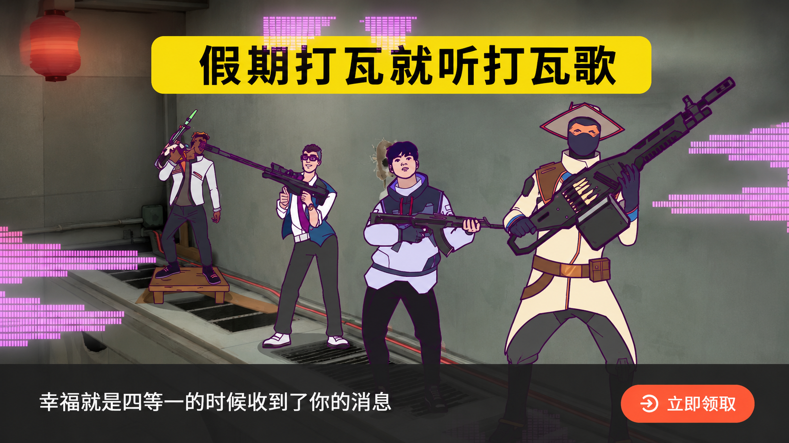
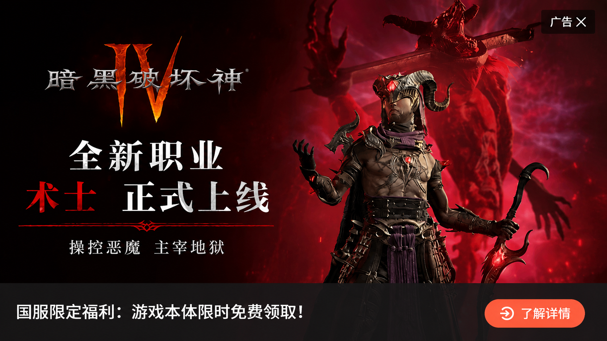
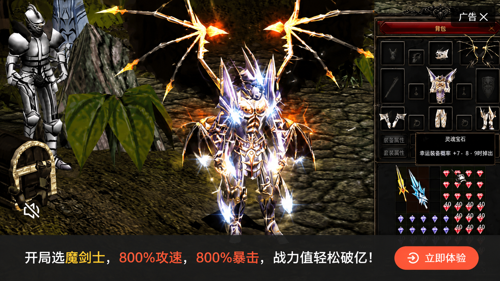
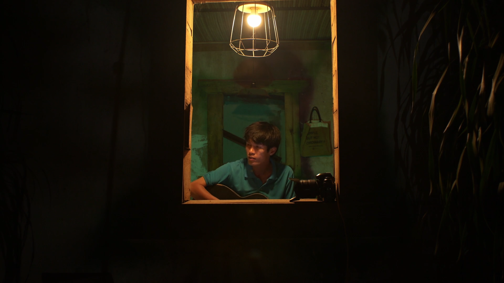
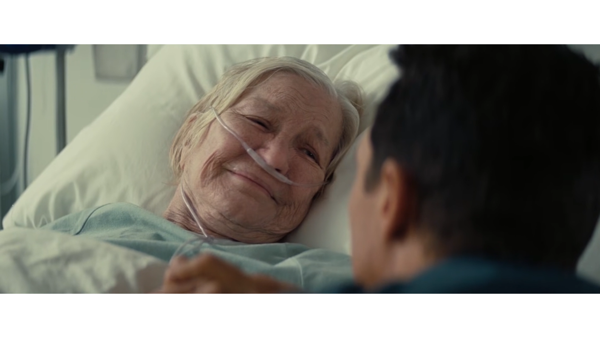
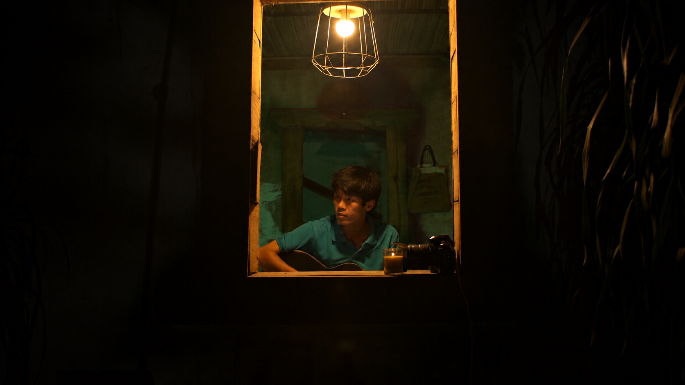
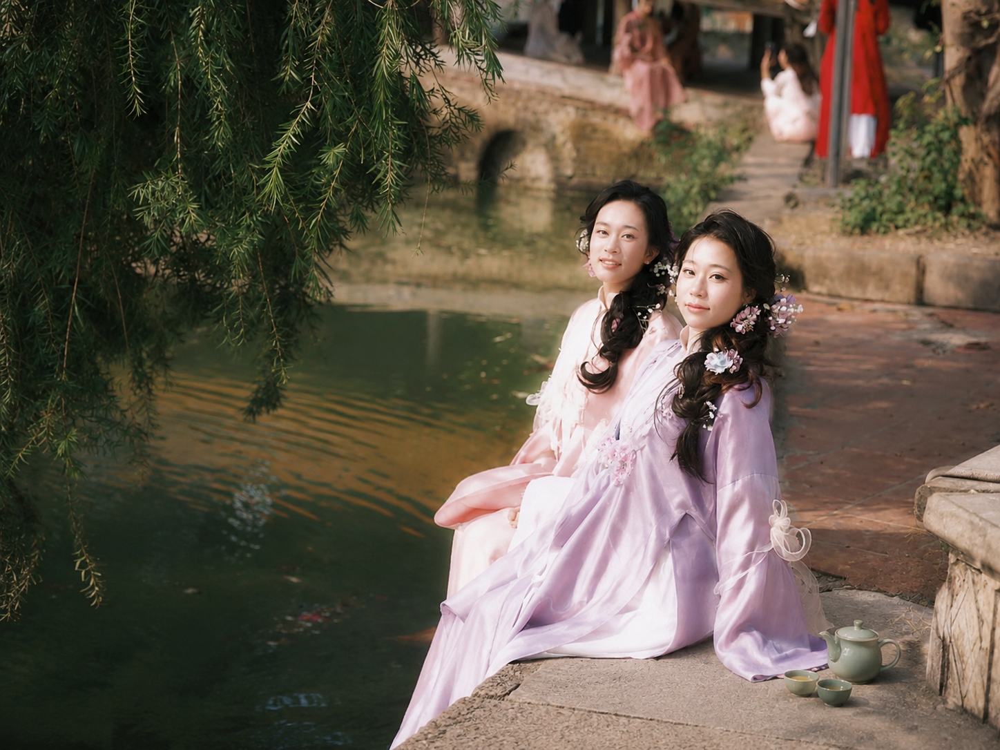
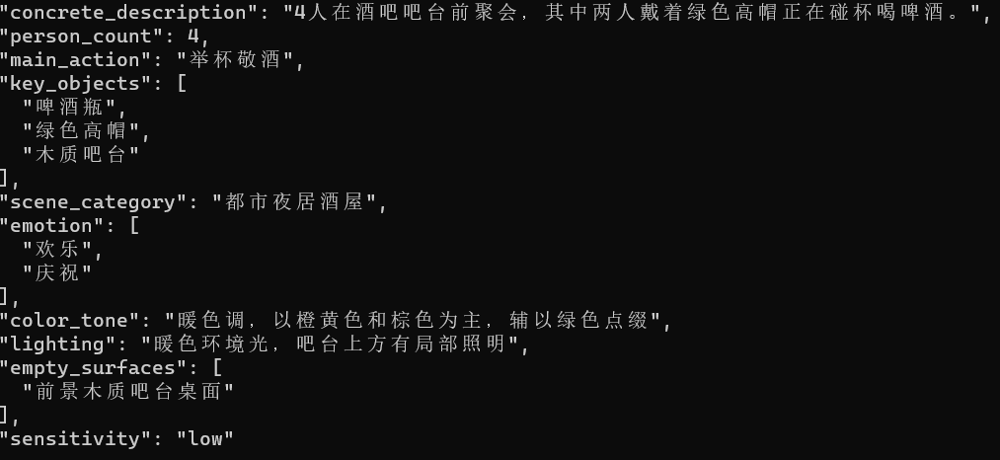
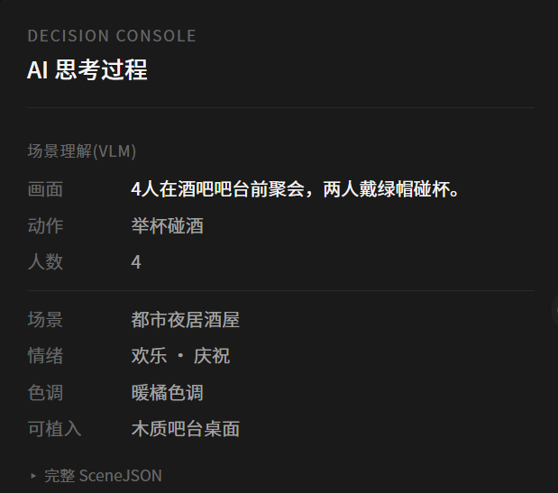

Pause
Reborn
把暂停从打断,重塑为延续
一个关于「暂停时刻」的 AI 原生体验系统 —— 重新定义腾讯视频暂停广告。
那些主动
按下暂停的人
腾讯视频付费会员中,主动「暂停」过的用户。
这个定义,比看起来更精确。
一张图,说明问题。
这是 2026 年 5 月,一位用户在腾讯视频暂停古装剧时,真实看到的画面。

用户痛点的三维拆解
内容错位 · 时机粗暴 · 形式失控。三种痛点,源自同一种产品哲学。

古装宫廷剧暂停瞬间,推送第一人称射击游戏。色调、节奏、叙事氛围彻底相反。

深夜独处的暂停,可能是为消化悲伤,可能是平复紧张。平台不区分,把所有暂停都当曝光位。
自动播放 · 居中遮挡 · 无关闭键 · 误触跳转。用户为内容付费,失去对屏幕的掌控权。
不是广告,
是哲学。
我们不反对广告。我们反对的,是把用户视为「流量库存」、把内容视为「广告之间填充物」的产品哲学。
用 户 = 待 转 化 的 对 象
内 容 = 广 告 之 间 的 填 充 物
用户烦的,不是广告本身。
- 没请求时出现 — 剥夺选择权
- 没空间逃避 — 剥夺退出权
- 无差别情绪节点出现 — 剥夺情境主权
付费会员同环比下滑 300 万
付费 → 期待更好体验 → 广告变粗暴 → 体验下降 → 「花钱反而被打扰」 → 流失。
— 数据来源:腾讯 2025 Q3 财报
四个真实的暂停时刻
情绪向内 · 视觉向外 · 社交向上 · 情绪沉重 —— 一个智能系统必须知道在每一种场景下如何回应。



把暂停,
重新「续写」。
Pause Reborn 是一个由 AI 主导的「暂停时刻」体验系统。
广告只是它的输出之一,不是它的目的。
四种输出形态
同一个产品,在不同决策路径下的自然延伸。广告只是其一。

产品自然出现在画面里,不是叠在画面上的广告卡片。
情绪疲劳累积时,主动建议切换轻松内容,平台变成内容向导。
敏感场景下主动选择「什么也不做」。不是技术限制,是产品价值观。

画面定品类,画像定品牌。同一帧 / 不同人,推荐不同 SKU。
从暂停到呈现的完整链路
产品必须服从场景,
而不是场景服从产品。
低端 VPP 在说:「看这个产品。」 高端 VPP 在说:「这个物件本来就在这里。」
从「曝光位」到「具体的人」
流量库存 · 曝光位逻辑
- 决策维度 · 1 维(广告主出价)
- 内容关联 · 零关联
- 时机判断 · 任何时候硬塞
- 形态多样性 · 单一弹窗
- 视觉语言 · 花哨刺眼
- 用户立场 · 待转化的对象
具体的人 · 陪伴者逻辑
- 决策维度 · 3 维(画面+画像+状态)
- 内容关联 · 场景级融入
- 时机判断 · 敏感场景主动克制
- 形态多样性 · 广告 / 陪伴 / 静默
- 视觉语言 · 电影级融入(7 原则)
- 用户立场 · 具体的人
三段式
多模态协同
不是单一大模型,而是 VLM · LLM · 图像生成 三种能力接力。
每段产物可验证 · 每段都可独立替换 · 每段都可离线缓存。
去 掉 AI , 这 个 产 品 直 接 不 存 在 。
规则系统只能基于元数据(剧名 / 集数 / 分钟)。从来到不了画面内容里有几个人在做什么。VLM 是唯一能跨越「元数据 → 语义」鸿沟的能力。
4 场景 × 3 画像 × 2 状态 × N 品牌 = 几十种规则。当维度扩展,规则指数级膨胀。LLM 让一切回到「自然语言判断」。
30 集 × 50 帧 × 3 画像 = 4500 张广告图。人工设计每张几小时,AI 几十秒。AI 让事情第一次在经济上可行。
现在的腾讯暂停广告系统,就是「去掉 AI 的版本」—— 那正是我们要解决的问题。
真实跑通的
三段式 Pipeline
强制结构化 JSON 输出 · 精确数清楚人数动作 · 强制识别敏感场景
scene_category · emotion · color_tone · empty_surfaces · sensitivity
整合场景 + 画像 + 状态 → 输出 show_ad / content_switch / no_ad 三选一
JSON 截断 → max_tokens 4000 · 非合法 JSON → safe_parse · 失败 → _ai_status: fallback
Cinematic VPP 七原则全部内置 prompt:scene-consistent exposure · partial visibility · lived-in · atmospheric haze · understated


离线预生成 + 实时查询
Demo 端到端 30-90 秒 · 生产必须 100ms 内响应。架构上不变,把"算"挪到上线前。
扫描候选帧 · 批量生成
- 剧情节奏 / 画面切换 / 时长断点 自动选帧
- 每帧跑 Stage 1/2/3,N 画像 × M 状态组合
- 预生成图存入 CDN,标签存向量库
- 单集成本 ≈ 50 帧 × 3 画像 × ¥0.15 ≈ ¥22.5
毫秒级查询 · 不调大模型
- 上报当前帧时间戳 + 用户标识
- 向量库查找最近预生成帧
- CDN 直取对应画像 / 状态的图
- 端到端 < 100ms · 大模型零调用
国产替代:VLM → 混元多模态视觉 · LLM → 混元 Turbo · 图像 → 混元图像 / 即梦 AI。三段式架构每段都可替换,无需重写。
从 Demo 到真实产品
1 个 AI 工程团队(5-8 人)+ 1 个前端团队(3 人)· Phase 2 阶段 ≈ 500 张 H100 卡时/月
腾讯视频后台剧集库 + 用户画像系统打通 · 微信账号体系授权机制
隐私授权 · 敏感场景误判人工审核兜底 · 剧情画面二次创作授权 · A/B 必须证明用户感知改善
三方都受益,
才是好生意。
广告主付费的去向
我们不是在做更好的广告。 我们是在重新定义「暂停」这个时刻 —— 在一个尊重用户的产品里, 应该是什么样子。
让一亿四千万人按下暂停的那一刻,被尊重。